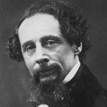
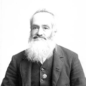
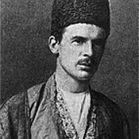
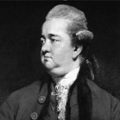
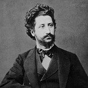
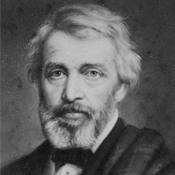

If Husain had fought to quench his
worldly desires…then I do not understand why his sister, wife, and children
accompanied him. It stands to reason therefore, that he sacrificed purely for
Islam.
CHARLES DICKENS
I learnd from Hussein how to achieve victory while being oppressed.
MAHATMA GHANDI

The tragedy of Karbala decided not only the fate of the Caliphate, but also of Mohammadan kingdoms long after the Caliphate had waned and disappeared.(Annals of the Early Caliphate, London, 1883, p.441-442)
SIR WILLIAM MUIR
No battle in the modern and past
history of mankind has earned more sympathy and admiration as well as
provided more lessons than the martyrdom of Husayn in the battle of
Karbala. (Husayn in Christian Ideology)
ANTOINE BARA

A reminder of
that blood-stained field of Karbala, where the grandson of the Apostle of
God fell, at length, tortured by thirst, and surround by the bodies of his
murdered kinsmen, has been at anytime since then, sufficient to evoke, even
in the most lukewarm and the heedless, the deepest emotion, the most
frantic grief, and an exaltation of spirit before which pain, danger, and death
shrink to unconsidered trifles. (A Literary History of Persia, London, 1919, p.227)
EDWARD G BROWNE

In a distant age
and climate, the tragic scene of the death of Hosein will awaken the
sympathy of the coldest reader. (The Decline and Fall of the Roman Empire, London,
1911, volume 5, p. 391-392)
EDWARD GIBBON

Weeping and lamentation over
the evils and persecutions suffered by the ‘Alid family, and mourning for its
martyrs: these are things from which loyal supporters of the cause cannot
cease. ‘More touching than the tears of the Shi’is’ has even become an
Arabic proverb. (Introduction to Islamic Theology and Law, Princeton, 1981, p.179)
IGNAZ GOLDZIHER

The best lesson which we get
from the tragedy of Cerebella is that Husain and his companions were rigid
believers in God. They illustrated that the numerical superiority does not
count when it comes to the truth and the falsehood. The victory of Husain,
despite his minority, marvels me!
THOMAS CARLYLE